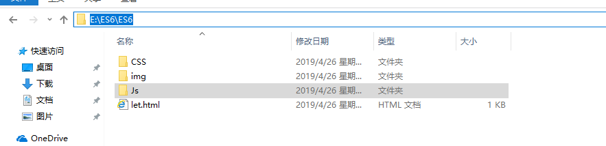
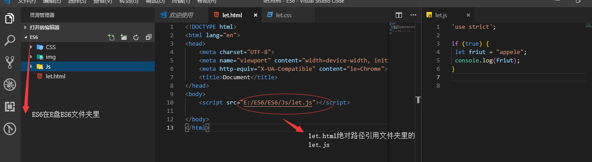
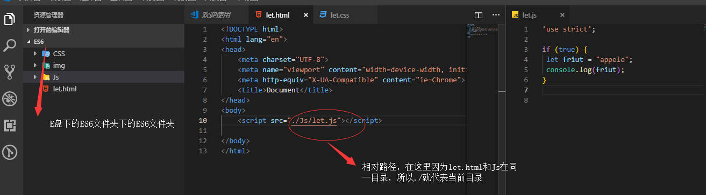

**首先得明白相对路径和绝对路径的概念和区别：**
**相对路径:**
相对路径就是指由这个文件所在的路径引起的跟其它文件（或文件夹）的路径关系。使用相对路径可以为我们带来非常多的便利。([百度百科]）
**绝对路径：**
绝对路径是指目录下的绝对位置，直接到达目标位置，通常是从盘符开始的路径。
完整的描述文件位置的路径就是绝对路径，以web站点根目录为参考基础的目录路径。绝对路径名的指定是从树型目录结构顶部的根目录开始到某个目录或文件的路径，由一系列连续的目录组成，中间用斜线分隔，直到要指定的目录或文件，路径中的最后一个名称即为要指向的目录或文件。之所以称为绝对，意指当所有网页引用同一个文件时，所使用的路径都是一样的。（[百度百科]）
**个人总结：**
相对路径简而言之就是相对自己所在的目录来引用其他文件（不是根目录）。
绝对路径就是相对根目录（磁盘）开始，每个文件使用的路径都是一样的。
**下面我从web中最常用的html中的例子来说明相对路径和绝对路径的区别：
****1.绝对路径**
**比如：**


**再来一个小例子：**
比如在平时在使用计算机时要使用文件就得知道文件的位置，比如现在有一个文件index.html,要使用index.png这张图片：
D:/websize/image/index.html
D:/websize/image/img/index.png
你使用路径D:/websize/image/img/index.png就可以引用这张图片，在你的计算机上一切正常，**但真正开发的时候基本上不使用绝对路径，因为项目移植困难，在其他计算机上就访问不到你的图片（他的计算机上没有你的图片）。**
**2.相对路径**（实际使用推荐）
首先明白：
“. ./ 代表当前文件的上一级目录
“./” 代表当前文件所在目录
**比如：**

**在来一个小例子：**
比如你的E盘下面的WEB文件夹里有两个文件互相访问。
E:/WEB/mar/img/index.html
E:/WEB/mar/image/ig/ip/pho.png
在这里想要从index.html访问pho.png，则路径是. ./image/ig/ip/pho.png;
如果想反过来访问index.html，则需要路径是. ./. ./. ./img/index.html
**如读者发现错误请联系作者，感激不尽！！！！**